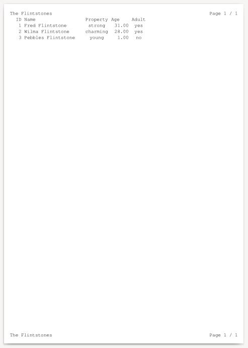

This example below uses a PostgreSQL query to generate a report in PDF output format, with many settings used as default:
Courier font
12 points font size
automatically calculated field width where it's not specified (note the header and footer fields)
black font color
white background
default paper size
Note that this particular default setting depends on your location, or rather, the computer's country settings. For example, the U.S. uses the Letter page size as default. On the other hand, most of Europe uses the A4 page size.
and so on.
Data is created as follows in a database called
ocrpttest using the user
ocrpt
create table flintstones (id serial, name text, property text, age int, adult bool);
insert into flintstones (name, property, age, adult)
values
('Fred Flintstone','strong',31,true),
('Wilma Flintstone','charming',28,true),
('Pebbles Flintstone','young',0.5,false);
The data looks like this when queried:
ocrpttest=> select * from flintstones; id | name | property | age | adult ----+--------------------+----------+-----+------- 1 | Fred Flintstone | strong | 31 | t 2 | Wilma Flintstone | charming | 28 | t 3 | Pebbles Flintstone | young | 1 | f (3 rows)
The program code uses a minimalistic approach, putting everything into the report XML instead.
#include <stdio.h>
#include <opencreport.h>
int main(int argc, char **argv) {
opencreport *o = ocrpt_init();
if (!ocrpt_parse_xml(o, "example1.xml")) {
printf("XML parse error\n");
ocrpt_free(o);
return 0;
}
ocrpt_set_output_format(o, OCRPT_OUTPUT_PDF);
ocrpt_execute(o);
ocrpt_spool(o);
ocrpt_free(o);
return 0;
}
Here's the equivalent program code in PHP.
<?php
$o = new OpenCReport();
if (!$o->parse_xml("example1.xml")) {
echo "XML parse error" . PHP_EOL;
exit(0);
}
$o->execute();
$o->spool();
Here's the equivalent program code in PHP, using the RLIB compatibility functions.
<?php
$r = rlib_init();
if (!rlib_add_report($r, "example1.xml")) {
echo "XML parse error" . PHP_EOL;
exit(0);
}
rlib_execute($r);
rlib_spool($r);
The program code uses this file contents
from example1.xml.
<?xml version="1.0"?>
<!DOCTYPE OpenCReport SYSTEM "opencreport.dtd">
<OpenCReport>
<Datasources>
<Datasource name="pgsql" type="postgresql" dbname="ocrpttest" user="ocrpt" />
</Datasources>
<Queries>
<Query name="q" datasource="pgsql">select * from flintstones;</Query>
</Queries>
<Report query="q">
<PageHeader>
<Output>
<Line>
<literal width="20">The Flintstones</literal>
<field value="printf('Page %d / %d', r.pageno, r.totpages)" align="right" />
</Line>
</Output>
</PageHeader>
<PageFooter>
<Output>
<Line>
<literal>The Flintstones</literal>
<field value="printf('Page %d / %d', r.pageno, r.totpages)" align="right" />
</Line>
</Output>
</PageFooter>
<Detail>
<FieldHeaders>
<Output>
<Line>
<literal width="4" align="'right'">ID</literal>
<literal width="1"/>
<literal width="20">Name</literal>
<literal width="1"/>
<literal width="8" align="'center'">Property</literal>
<literal width="1"/>
<literal width="6">Age</literal>
<literal width="1"/>
<literal width="5" align="'center'">Adult</literal>
</Line>
</Output>
</FieldHeaders>
<FieldDetails>
<Output>
<Line>
<field width="4" align="right" value="id" />
<literal width="1"/>
<field width="20" value="name" />
<literal width="1"/>
<field width="8" align="'center'" value="property" />
<literal width="1"/>
<field width="6" align="'right'" value="age" format="'%.2d'" />
<literal width="1"/>
<field value="adult ? 'yes' : 'no'" width="5" align="'center'"/>
</Line>
</Output>
</FieldDetails>
</Detail>
</Report>
</OpenCReport>
